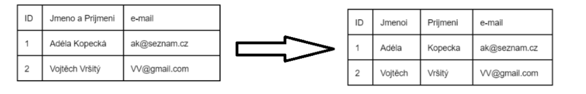
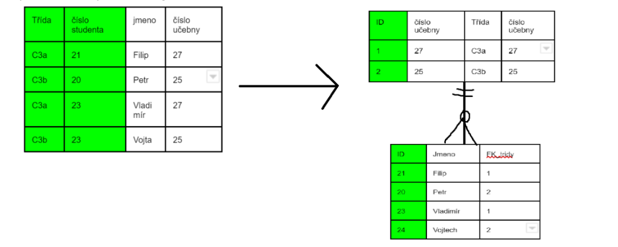
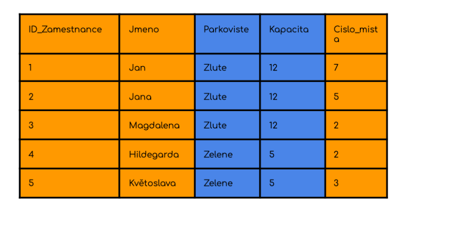

Normalizace-relacni-databaze
Otázky
Co je to normalizace
Proč normalizovat
Čeho docílíme
Co je to konzistence
Co je to redudance
Co je to denormalizace
Normalizace
Normalizace je proces uspořádání dat v databázi
Cílem normalizace je zamezit redudanci dat a zajistit tak konzistenci dat
konzistence zajistí rychlejší a paěťově méně náročnější databázi
Primární klíč
umělý - námi určený třeba číslo
přirozený - unikátní atribut v tabulce - rodné číslo
složený - z 2 a více atributů
jednoduchý - z 1 atributu
Normálové formy
0. NF
Každá entita musí mít právě jeden unikátní ne Null PK
1. NF - atomická
každá hodnota sloupce a řádku dané enity musí mít pouze jednou hodnotu, která nejde dělit an více atributů-sloupců
docílíme tím rychlého a konzistentního vyhledávání v databázi

ID Osoby | Jméno | Telefonní číslo |
|---|---|---|
1 | Petr Novák | +420 111 222 333 |
2 | Jarmil Hnízdo | +420 123 123 123, +420 123 123 124 |
Rozdělíme na Osoby
ID Osoby | Jméno |
|---|---|
1 | Petr Novák |
2 | Jarmil Hnízdo |
a na Kontakty
ID Kontaktu | ID Osoby | Telefonní číslo |
|---|---|---|
1 | 1 | +420 111 222 333 |
2 | 2 | +420 123 123 123 |
3 | 2 | +420 123 123 124 |
2. NF - redudance
každý neklíčový atribut musí záviset na celém PK
nebude li toto splněnu dojde k redudanci dat --> nekonzistence DB
pokud tabulka splňuje 1. NF a vytvoříme jednoduchý klíč splňuje tak i 2. NF (glitch na NF lmao)

3. NF - redudance
v tabulce nesmí být tranzitivní závislost--> neklíčové atributy na sobě navzájem nesmí záviset
důvodem jsou opět redudantní stavy --> nekonzistence DB
 v příkladu oranžová závisí na PK ale modrá ne --> kapacita závisí na parkovišti což je špatně
řešením je vytvořit tabulku pro parkoviště
Dernormalizace
not sure jestli je součástí otázky nebo ne but still good to know
Denormalizace je proces, při kterém se záměrně zvyšuje redudance dat v DB
cílem je zlepšit výkon či snížit složitost dotazů
můžeme použít třeba když víme, že se z DB bude převážně číst
ne vždy se to vyplatí
Sum-up
Normalizace
proces uspořádání dat v DB
cíl - konzistence a rychlost DB
NF
atomické atributy - nelze je dále rozdělit
neklíčové atributy musí být závislé na celém PK
nesmí být trazitivní závislost --> neklíčové atributy nesmí být závislé na sobě navzájem
Denormalizace
záměrné tvoření redudance dat
může zlepšit výkon či snížit složitost dotazů